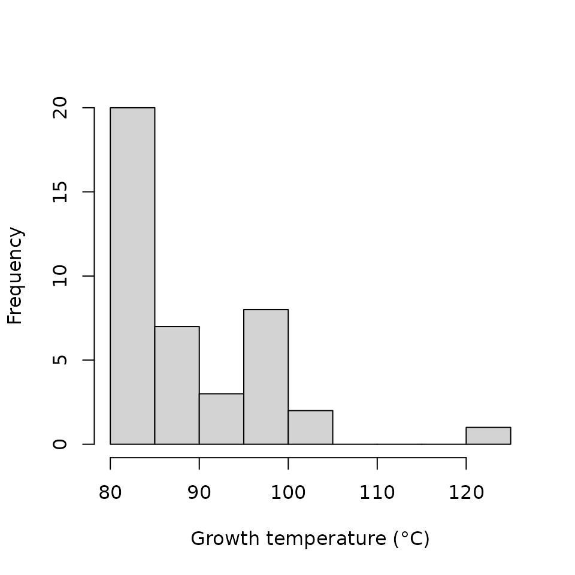

makeSignatures.RmdThe bugphyzz package provides functionality to help in the creation of microbial signatures that can be used as inputs for other R packages, such as EnrichmentBrowser.
library(bugphyzz)
library(dplyr)
#>
#> Attaching package: 'dplyr'
#> The following objects are masked from 'package:stats':
#>
#> filter, lag
#> The following objects are masked from 'package:base':
#>
#> intersect, setdiff, setequal, unionThe first step for the creation of microbial signatures is to import a dataset with the physiologies or the fattyAcidCompositon functions.
aer <- physiologies("aerophilicity")[[1]] %>%
as_tibble()
#> Finished aerophilicityA list of signatures can be easily created with the makeSignatures function:
## Signatures with NCBI IDs
aer_sig <- makeSignatures(aer, taxids = "NCBI_ID", min_sig_size = 5)
lapply(aer_sig, head)
#> $aerobic
#> [1] "10" "16" "20" "59" "68" "71"
#>
#> $anaerobic
#> [1] "18" "96" "157" "279" "657" "816"
#>
#> $`facultatively anaerobic`
#> [1] "22" "146" "538" "541" "544" "547"
#>
#> $microaerophilic
#> [1] "6" "191" "963" "12960" "13134" "40544"
#>
#> $`obligately aerobic`
#> [1] "99" "123" "179" "222" "237" "338"
#>
#> $`obligately anaerobic`
#> [1] "146" "832" "836" "848" "864" "866"Above, the taxids = "NCBI_ID option was used to create signatures with NCBI taxonomy IDs. Other available options are Accession_number, Genome_ID, and Taxon_name.
Signatures with accession number:
## Signatures with accession numbers
aer_sig_acc <- makeSignatures(aer, taxids = "Accession_number", min_sig_size = 5)
lapply(aer_sig_acc, head)
#> $aerobic
#> [1] "NC_009925, NC_009926, NC_009927, NC_009928, NC_009929, NC_009930, NC_009931, NC_009932, NC_009933, NC_009934"
#> [2] "NC_013209, NC_013210, NC_013211, NC_013212, NC_013213, NC_013214, NC_013215"
#> [3] "NC_014640, NC_014641, NC_014642"
#> [4] "NC_009467, NC_009468, NC_009469, NC_009470, NC_009471, NC_009472, NC_009473, NC_009474, NC_009484"
#> [5] "NC_015178, NC_015179, NC_015180, NC_015181, NC_015182, NC_015186, NC_015187, NC_015188, NC_015189"
#> [6] "NC_011206"
#>
#> $anaerobic
#> [1] "NC_014378" "NC_013740" "NC_014374" "NC_013124" "NC_013926" "NC_015278"
#>
#> $`facultatively anaerobic`
#> [1] "NC_010163" "NC_015518" "NC_011761" "NC_011992" "NC_010278" "NC_009053"
#>
#> $microaerophilic
#> [1] "NC_014166"
#> [2] "NC_008702"
#> [3] "NC_014171, NC_014172"
#> [4] "NC_015903, NC_015904, NC_015905, NC_015906, NC_015907, NC_015908, NC_015909, NC_015910, NC_015911, NC_015915, NC_015916, NC_015917, NC_015918, NC_015919, NC_015920, NC_015921, NC_015922"
#> [5] "NC_000948, NC_000949, NC_000950, NC_000951, NC_000952, NC_000953, NC_000954, NC_000955, NC_000956, NC_000957, NC_001318, NC_001849, NC_001850, NC_001851, NC_001852, NC_001853, NC_001854, NC_001855, NC_001856, NC_001857, NC_001903, NC_001904"
#> [6] "NC_011720, NC_011722, NC_011724, NC_011728, NC_011731, NC_011735, NC_011736, NC_011778, NC_011779, NC_011780, NC_011781, NC_011782, NC_011783, NC_011784, NC_011785"
#>
#> $`obligately aerobic`
#> [1] "NC_014750, NC_014759"
#> [2] "NC_015579, NC_015580, NC_015582, NC_015583"
#> [3] "NC_013523, NC_013524"
#> [4] "NC_014221"
#> [5] "NC_014158, NC_014159"
#>
#> $`obligately anaerobic`
#> [1] "NC_014497"
#> [2] "NC_015686, NC_015687, NC_015688"
#> [3] "NC_015417, NC_015418, NC_015419, NC_015425, NC_015426, NC_015427"
#> [4] "NC_013315"
#> [5] "NC_015565"
#> [6] "NC_015573"Signatures with taxon names
## Signatures with taxa names
aer_sig_taxnames <- makeSignatures(aer, taxids = "Taxon_name", min_sig_size = 5)
lapply(aer_sig_taxnames, head)
#> $aerobic
#> [1] "Cellvibrio" "Methylophilus" "Phenylobacterium" "Vitreoscilla "
#> [5] "Lysobacter" "Simonsiella"
#>
#> $anaerobic
#> [1] "Pelobacter" "Gallionella" "Treponema" "Xanthobacter"
#> [5] "Photobacterium" "Bacteroides"
#>
#> $`facultatively anaerobic`
#> [1] "Shewanella " "Spirochaeta " "Eikenella " "Zymomonas " "Citrobacter"
#> [6] "Enterobacter"
#>
#> $microaerophilic
#> [1] "Azorhizobium" "Azospirillum" "Herbaspirillum" "Azoarcus "
#> [5] "Magnetospirillum" "Sutterella "
#>
#> $`obligately aerobic`
#> [1] "Ancylobacter" "Pirellula" "Leptospirillum" "Achromobacter "
#> [5] "Flavobacterium " "Xanthomonas"
#>
#> $`obligately anaerobic`
#> [1] "Spirochaeta " "Fibrobacter" "Porphyromonas" "Fusobacterium"
#> [5] "Pectinatus" "Ruminobacter"If there are no taxa with some type of ID, no signatures would be created:
## This dataset does not contain Genome ID annotaions
makeSignatures(aer, taxids = "Genome_ID", min_sig_size = 5)
#> No signatures.
#> NULLThe signatures above contained taxa of mixed rank levels, e.g., genus and strain. Signatures at a specific taxonomy rank can be created with the tax_rank = <rank> and sig_type = "ranked" options:
Signatures at the genus level:
## Signatures at the genus level
aer_sig_genus <- makeSignatures(aer, taxids = "Taxon_name", tax_rank = "genus", sig_type = "ranked", min_sig_size = 5)
lapply(aer_sig_genus, head)
#> $aerobic
#> [1] "Cellvibrio" "Methylophilus" "Phenylobacterium" "Vitreoscilla "
#> [5] "Lysobacter" "Simonsiella"
#>
#> $anaerobic
#> [1] "Pelobacter" "Gallionella" "Treponema" "Xanthobacter"
#> [5] "Photobacterium" "Bacteroides"
#>
#> $`facultatively anaerobic`
#> [1] "Shewanella " "Spirochaeta " "Eikenella " "Zymomonas " "Citrobacter"
#> [6] "Enterobacter"
#>
#> $microaerophilic
#> [1] "Azorhizobium" "Azospirillum" "Herbaspirillum" "Azoarcus "
#> [5] "Magnetospirillum" "Sutterella "
#>
#> $`obligately aerobic`
#> [1] "Ancylobacter" "Pirellula" "Leptospirillum" "Achromobacter "
#> [5] "Flavobacterium " "Xanthomonas"
#>
#> $`obligately anaerobic`
#> [1] "Spirochaeta " "Fibrobacter" "Porphyromonas" "Fusobacterium"
#> [5] "Pectinatus" "Ruminobacter"Signatures at the strain level:
## Signatures at the strain level
aer_sig_strain <- makeSignatures(aer, taxids = "Taxon_name", tax_rank = "strain", sig_type = "ranked", min_sig_size = 5)
lapply(aer_sig_strain, head)
#> $aerobic
#> [1] "Acaryochloris marina MBIC11017"
#> [2] "Achromobacter xylosoxidans A8"
#> [3] "Acidiphilium cryptum JF-5"
#> [4] "Acidiphilium multivorum AIU301"
#> [5] "Acidithiobacillus ferrooxidans ATCC 53993"
#> [6] "Acidobacterium capsulatum ATCC 51196"
#>
#> $anaerobic
#> [1] "Acetohalobium arabaticum DSM 5501"
#> [2] "Acidaminococcus fermentans DSM 20731"
#> [3] "Acidilobus saccharovorans 345-15"
#> [4] "Acidimicrobium ferrooxidans DSM 10331"
#> [5] "Aciduliprofundum boonei T469"
#> [6] "Aerococcus urinae ACS-120-V-Col10a"
#>
#> $`facultatively anaerobic`
#> [1] "Acholeplasma laidlawii PG-8A"
#> [2] "Acidianus hospitalis W1"
#> [3] "Acidithiobacillus ferrooxidans ATCC 23270"
#> [4] "Acidovorax ebreus TPSY"
#> [5] "Actinobacillus pleuropneumoniae serovar 3 str. JL03"
#> [6] "Actinobacillus pleuropneumoniae serovar 5b str. L20"
#>
#> $microaerophilic
#> [1] "Arcobacter nitrofigilis DSM 7299" "Bacillus thuringiensis BMB171"
#> [3] "Borrelia bissettii DN127" "Borrelia burgdorferi B31"
#> [5] "Borrelia burgdorferi ZS7" "Caldivirga maquilingensis IC-167"
#>
#> $`obligately anaerobic`
#> [1] "Candidatus Zinderia insecticola CARI"
#> [2] "Clostridium acetobutylicum DSM 1731"
#> [3] "Clostridium botulinum BKT015925"
#> [4] "Clostridium difficile CD196"
#> [5] "Desulfotomaculum carboxydivorans CO-1-SRB"
#> [6] "Desulfotomaculum kuznetsovii DSM 6115"Currently, ranked signtures are limited at the “genus”, “species”, and “strain” levels:
tryCatch(makeSignatures(aer, taxids = "Taxon_name", tax_rank = "class", sig_type = "ranked", min_sig_size = 5),
error = function(cnd) conditionMessage(cnd))
#> [1] "Invalid taxonomy rank with 'sig_type = \"ranked\"' option. Select one of: genus, species, or strain"Since annotations in the datasets in bugphyzz can come from diverse sources, some taxa might be annotated at a given taxonomic rank, e.g., species, but not at a higher level, e.g., genus. Some users might be interested in creating signatures at those higher levels. In this case, the sig_type = "inherited" option can be used to create an “inherited” signature.
As an example, let’s create a signature at the genus level of extreme thermophilic microbes growing at 80°C or above.
First, let’s import the “growth temperature” datasets and filter those microbes growing at 80°C or above:
gt <- physiologies("growth temperature")[[1]]
#> Finished growth temperature
tm <- gt %>%
filter(Attribute_value > 80)
hist(tm$Attribute_value, main = NULL, xlab = "Growth temperature (°C)")
If we attempt to create a signature at the genus level of these extreme thermophiles, we would not get an output because the dataset does not contain annotations at the genus level:
tm_sig_genus <- makeSignatures(tm, taxids = "Taxon_name", sig_type = "ranked", tax_rank = "genus")
#> No signatures.
tm_sig_genus
#> NULLHowever, the dataset does contain annotations at the species and strain levels:
## signature at the species level
makeSignatures(tm, taxids = "Taxon_name", sig_type = "ranked", tax_rank = "species")[[1]] %>%
head()
#> [1] "Methanocaldococcus sp. FS406-22" "Aquifex pyrophilus Ko15a; DSM 6858"
#> [3] "Anoxybacillus flavithermus" "Aquifex aeolicus"
#> [5] "Burkholderia gladioli" "Candidatus Korarchaeum cryptofilum"
## signature at the strain level
makeSignatures(tm, taxids = "Taxon_name", sig_type = "ranked", tax_rank = "strain")[[1]] %>%
head()
#> [1] "Aeropyrum pernix K1" "Aquifex aeolicus VF5"
#> [3] "Archaeoglobus fulgidus DSM 4304" "Caldivirga maquilingensis IC-167"
#> [5] "Desulfurococcus kamchatkensis 1221n" "Ferroglobus placidus DSM 10642"So, we can create a signature of genera that inherit their annotations from these lower taxonomic ranks (species and strain) with the sig_type = "inherited" option:
tm_sig_genus <- makeSignatures(tm, taxids = "Taxon_name", sig_type = "inherited", tax_rank = "genus")
head(tm_sig_genus[[1]])
#> [1] "Aeropyrum" "Aquifex" "Archaeoglobus" "Caldivirga"
#> [5] "Desulfurococcus" "Ferroglobus"We recommend caution when using and interpreting the inherited signatures. For example, the output of the code below indicates that the growth temperature dataset contains one or more taxa that belong to the superkingdoms Archaea and Bacteria, not that all taxa in Archaea and Bacteria are thermophiles:
makeSignatures(tm, taxids = "Taxon_name", sig_type = "inherited", tax_rank = "superkingdom")
#> $`growth temperature`
#> [1] "Archaea" "Bacteria"